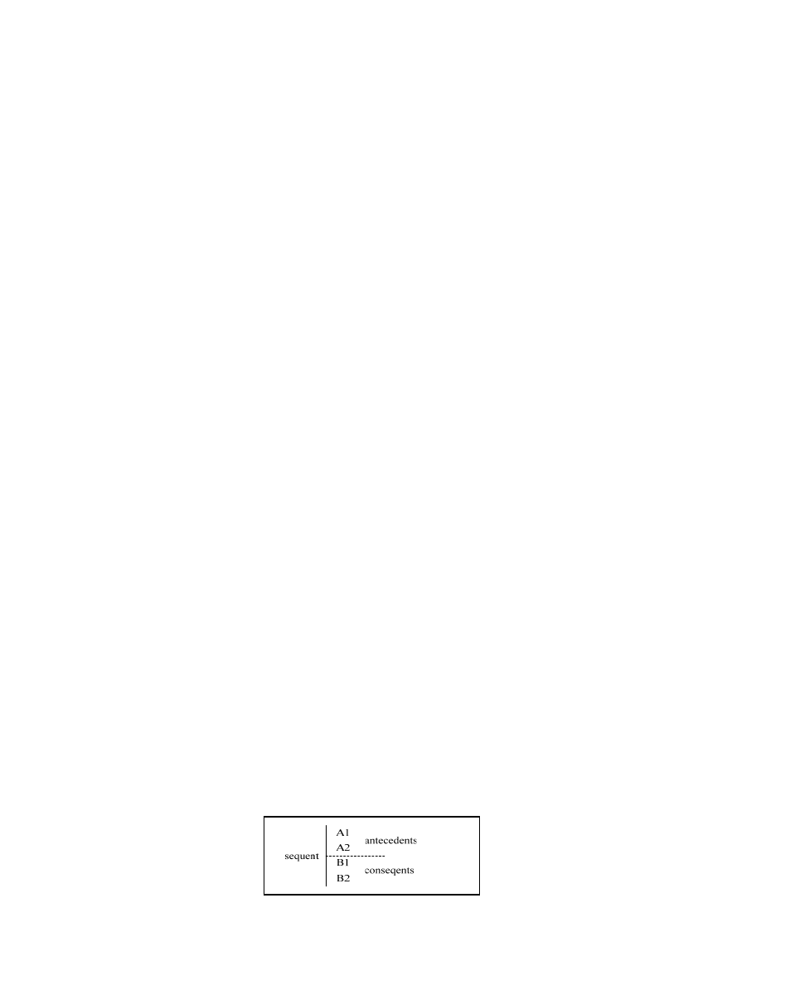

127
Ling Yuan and Ping Fan / AASRI Procedia 5 ( 2013 ) 126 – 132
be online trading, disaster response, and modeling social structures, etc. Since the software architecture is very
good choice to ease the development complexity of distributed system [2], [3], we apply the architecture style
in the development of multi-agent systems. Since these kinds of multi-agent system applications have
common in the construction level, a Multi-Agent System Architecture (MASA) can be very helpful in
developing the multi-agent system.
The multi-agent system also tends to be rapidly self-recovering to satisfy reliability requirements. In the
proposed MASA, fault tolerant mechanisms [4], [5] are incorporated to provide exception handling capability
to the multi-agent systems.
With the well-defined semantics, the formal methods [6], [7] can be used to write the precise specification
and process the rigorous verification for the architecture design. Prototype Verification System (PVS) [8], [9]
is very powerful in writing formal language and process the verification for complex high reliability systems.
The formal language of PVS is easy to learn how to specify the model. The theorem prover of PVS can be
controlled by the users by just inputting proof lemmas. These strengths of PVS are very helpful in verifying
whether Multi-Agent System Architecture can satisfy the high reliability requirements.
The remainder of this paper is organized as follows. The basic concepts of PVS are described in Section 2.
The structure of MASA is illustrated in Section 3. The PVS specification model of MASA is described in
Section 4. Section 5 demonstrates whether the model of MASA can satisfy high reliability requirements. In
Section 6, we conclude the paper.
2. Background-Prototype Verification System
In the Prototype Verification System (PVS), the formal specification is normally composed of theories. As
shown in Fig.1, a list example is used to explain how to write a theory. The LIST
THEORY has a parameter
Entry. There are two important functions here. One Function Leave specifies how an old entry leaves the list.
And the function Join specifies how the list receives a new entry.
Fig.1 Example of LIST Theory
In the process of verification, the PVS theorem prover can construct a proof tree, where all nodes should
be true. The node of a proof tree can be considered as a sequent. And the sequent is composed of antecedents
and consequents. For example, the A1 and A2 can be found in the antecedent, and the B1 and B2 can be found
in the consequent, as shown in Fig.2. By entering PVS proof commands, the PVS theorem prover can process
the verification.
Fig.2 Proof Tree of PVS Theorem Prover
LIST [Entry. Type+]:THEORY
BEGIN
entries: TYPE=[#size: nat, elements: ARRAY[{i|i<size}->Entry]#]
ents: VAR entries
nonemptylist?(ents): bool=(size(entries)>0)
nents: VAR(nonemptylist?)
join(entry, ents): entries=(#size:=size(ents)+1, elements:= elements(ents)WITH[(size(ents)):=entry]#)
leave(entry, nents): entries=(#size(nents)-1,)
entries:=(LAMBDA(j:{ i|i<size(nents)-1}:elements(nents)(j+1))#)
END Queue